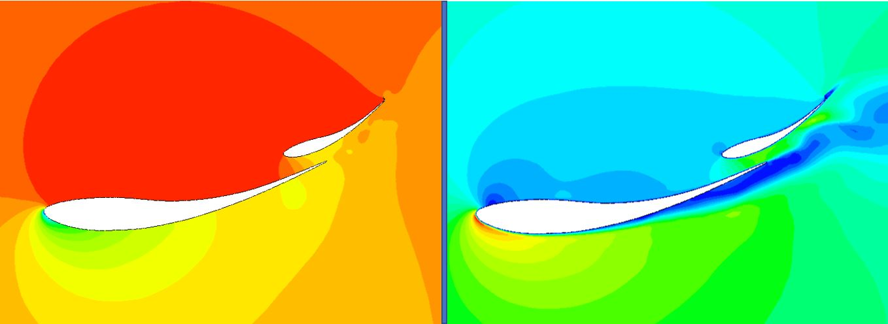
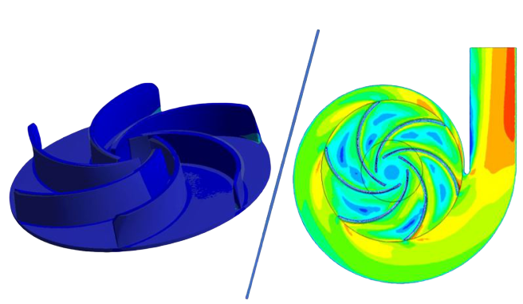
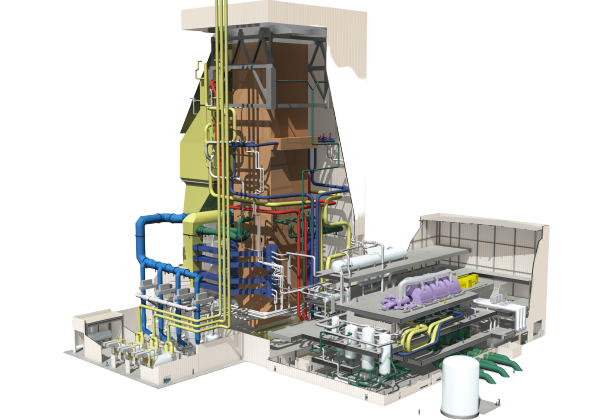

F1 cars largely depend on downforce to achieve very high speeds on corners. Finding the balance between drag and downforce is what every formula 1 team is trying to accomplish. Since the rear wing greatly contribute to the total downforce on F1 cars, this study focused on improving the F1 rear wing and flap. Numerous designs were created to discover the best rear wing characteristics to generate the highest downforce possible while keeping the drag at a manageable value. The first finding of the study was that the rear wing function better with a decent distance between the wing and the flap. Placing the flap very close to the wing decreases the downforce and result in a distorted flow. This research found out that 4cm gap between the wing and the flap yields the best results in terms of downforce and drag. The second discovery of the study is at what angle of attack the wing and flap should be positioned. It was revealed that as the angle of attack increase, the downforce and drag increase as well. An airfoil with a high curvature can go up to 20 degrees while still generating high downforce. But an airfoil with low curvature stall earlier and start declining in downforce as the angle reach 15 degrees. The purpose of using multi-element wings is that the wing can assist the flap in adhering the flow to the surface. Thus, the flap is able to produce downforce at very high angles of attack. Once the flap angle is changed independently, the downforce peaked. After analysing multiple designs, this study discovered that GOE 233 airfoil with 4cm gab between the wing whose angle is at 10 degrees and the flap whose angle is at 28 degrees produced the highest downforce with relatively low drag. The addition of the gurney flap to the system resulted in higher downforce production, but higher drag as well. The increase in drag was around 33%, which makes the gurney flap used only in specific situation where straight line speed is not significant.
Centrifugal pumps are used extensively in the oil and gas industry, construction sector and wastewater infrastructure. The impeller is considered as the most vital component that contributes to the efficiency of the pump. The design of the impeller consists of independent parameters which have an impact on the pump. Implementing changes to the geometrical parameters of the impeller can aid in improving pump performance and result in saving a significant amount of money on energy costs. This research investigates the pump characteristics by modifying the wrap angles and the angles of twist by making variations to the angle at the inlet and outlet, respectively. Numerical simulations have been carried out on ANSYS. Navier-Stokes equations with realizable k-ε turbulence model were used for the unsteady and incompressible flow of water through the pump. Firstly, the pressure and velocity contours were attained for the wrap angles 90˚, 120˚, 140˚,150 ˚, 160 ˚ and 180˚. Following that, the most efficient wrap angle was combined with different variations in inlet and outlet angles. The investigations showed that the wrap angles and angles of twist have a significant influence on the performance of the pump. The highest head was achieved with a wrap angle of 120˚ and an inlet angle of 20˚ and an outlet angle of 25˚. Lastly, Finite Element Analysis was performed to determine the Von misses stress distribution across the blade and to ensure there's a safe margin to prevent any distortion from occurring.
Steam engines need to be optimized to meet the world's increasing global demands for electricity. A coal-fired steam engine operates on the basis on a Rankine cycle. The purpose of this research is to investigate the effect of different conditions on the efficiency of steam power plants. Five different cases were studied that consisted of a combination of reheaters and implementation of feedwaters into the cycle. The results obtained indicated that efficiency was the highest for a system with double reheater with one closed feedwater and one open feedwater.
